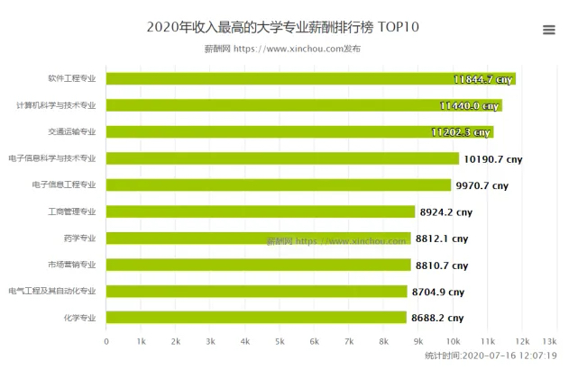
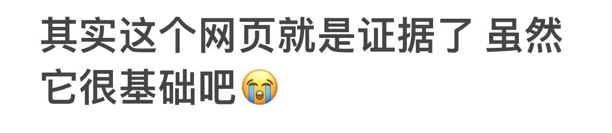

鼠人编程一生
其实鼠人有极大可能并不会编程一生
幽默
影视
编程
未完待续
前半生
*为什么选计算机啊？*
还没有目标的时候 先搞钱

我爸：计算机？
我：行吧
*编程之路如何走*
不知道 我需要寻找目标
专业选择
计算机科学与技术
人工智能
网络空间安全
通信工程
*我原本的职业规划*
*一个有钱途的规划
进入大厂
努力工作
争取熬过35岁门槛 *注：已变为30岁门槛*
早日实现财富自由
但现在不了
我还是想要身体健康
人是要为祖国和社会努力工作的
但不应该以健康为代价
*鼠人学编程的证据：*

如果觉得鼠人这样那样无病呻吟想要取得联系:
鼠人邮箱:2798778230@qq.com
Shuren's github:moonislazy